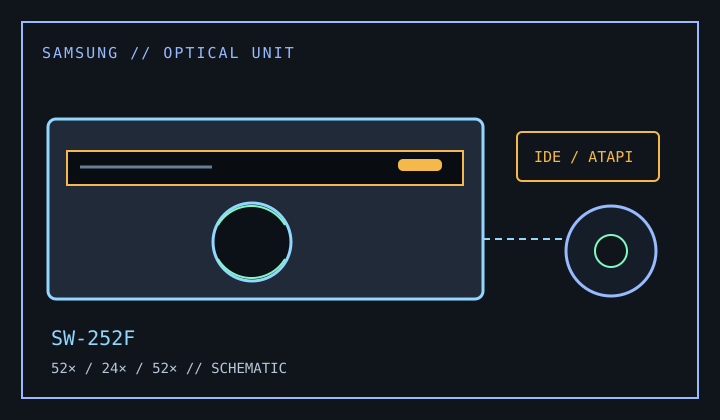

[ CD-R AND CD-RW DRIVES // IDENTIFIED MODEL ]
Samsung SW-252F
Internal 52× CD-R / 24× CD-RW recorder with 52× maximum CD read speed and an IDE/ATAPI host connection.

IDENTIFICATION: The exact SW-252F suffix matters; do not substitute a similarly named Samsung writer or an OEM firmware package.
Documented specifications
| Exact model | Samsung SW-252F |
|---|---|
| CD-R write | Up to 52× |
| CD-RW rewrite | Up to 24× |
| CD read | Up to 52× |
| Supported media | Writes CD-R and CD-RW; reads CD-ROM, CD-ROM XA, CD-DA, CD-Plus/CD-Extra, Photo CD, Video CD, CD-I/FM V, CD-TEXT and supported multisession discs. |
| Interface / bay | Internal IDE/ATAPI, half-height 5.25-inch optical bay. |
| Host compatibility | Requires an IDE/ATAPI-capable host and CD authoring software that recognizes the SW-252F. Use the operating-system and connection instructions in the model manual; modern OS support for the mechanism does not guarantee support for original writing software. |
| Firmware / jumper | Record the firmware identifier before service and use only a SW-252F/OEM-matched firmware image. Set Master/Slave/Cable Select as shown for this unit and the IDE channel; do not assume another SW-series jumper map is identical. |
Compatibility and preservation
- Use supported blank media and a recorder driver/software package compatible with the host OS; the rated maximum is not guaranteed on every disc.
- Log firmware, media type, host controller, jumper selection and write/verification errors for preservation work.
- Store verified disc images separately and retain checksums rather than relying on a single optical copy.
Manufacturer and manual references
- Samsung SW-252F CD/CDR drive manualModel-specific user/installation manual with media and setup information.
- Samsung SW-252F user manualSecond archived copy of the model manual for installation and supported-disc reference.